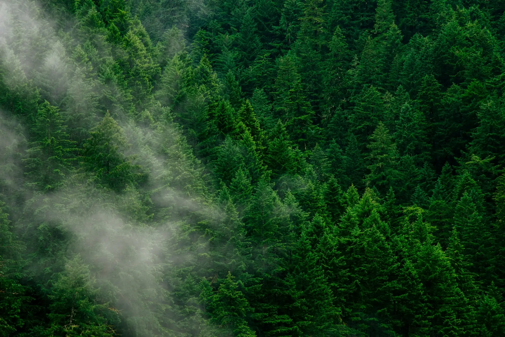

Питомник растений и ландшафтные работы · Новосибирск и область
Саженцы для Сибири и озеленение участков под ключ
Розы, туи, сирень, яблони и ягодные — с гарантией приживаемости. Газон, плитка и подсветка дома под ключ. Отправляем по всей России, а перед отправкой присылаем фото и видео заказа.
Плотная крона и зелёная хвоя круглый год. Форму шара держат сами, без сложной стрижки.
Очищают воздух, задерживают шум и пыль, хороши и поодиночке, и группой. «Вудварди» с годами достигает 1,5 м в высоту и 1,3 м в диаметре.
Неприхотливы, мирятся с бедными грунтами и полутенью, позволяют стрижку — в том числе топиарную. Уход: регулярный полив с дождеванием кроны и мульчирование.
Рабочие готовят основание и укладывают рулонный газон
посев · рулонный · уход
Газон под ключ
Посевной или рулонный газон под ключ: подготовим основание, подберём травосмесь и вырастим ровный газон.
Аэрация улучшает дренаж и воздухопроницаемость, способствует росту корней и не даёт появиться мху. Скарификация убирает войлок и обновляет газон.
Посевной газон
Экономичен, легко укладывается, разнообразие сортов, естественный вид.
Рулонный газон
Готовый зелёный ковёр за один день.
Аэрация и скарификация
Прокалываем дёрн и вычёсываем войлок, чтобы трава дышала и не зарастала мхом.
Посев семян, укладка газона и табличка Green Life на готовом газоне
Как проходит посев
Всё делаем сами: от расчистки участка до первых всходов. Травосмесь подбираем под солнце, тень и нагрузку — для детской площадки нужна одна, для парадного газона другая.
Подскажем, как ухаживать, и отвечаем за приживаемость
Доставим по городу, отправим по России
По Новосибирску
Бесплатная доставка при заказе от 3 000 ₽. Гортензии — бесплатно от 3 штук.
По всей России
Отправляем саженцы в любые регионы. Перед отправкой присылаем фото и видео именно ваших растений.
Опт и учреждения
Работаем с частными лицами, компаниями и государственными учреждениями. Большой опт — по отдельному прайсу.
Частые вопросы
Вы отправляете саженцы в другие регионы?
Да, отправляем по всей России. Перед отправкой снимаем фото и видео вашего заказа на месте сборки, чтобы вы видели, что получите.
Можно ли забронировать саженцы на весну?
Да. Напишите, какие сорта и сколько нужно, — закрепим их за вами и отгрузим в начале посадочного сезона.
Приживутся ли растения в Сибири?
Мы продаём сорта, выращенные в Сибири и проверенные нашими зимами, и даём гарантию приживаемости. Агроном подскажет, как и когда сажать.
Когда можно сажать розы с закрытой корневой системой?
В любое время сезона: растение в контейнере не испытывает стресса при пересадке и сразу идёт в рост.
Как быстро вы приезжаете на замер?
Обычно в течение пары часов после обращения по Новосибирску. Работы по подсветке часто начинаем уже на следующий день.
Работаете ли вы с компаниями и учреждениями?
Да, озеленяем придомовые территории и работаем с государственными учреждениями. Для опта — отдельные цены.
Можно ли вернуть или обменять растение?
Растения надлежащего качества, купленные в питомнике, обмену и возврату не подлежат (перечень Правительства РФ). Если покупка была на расстоянии, по фото и видео, от неё можно отказаться до получения и в течение 7 дней после (3 месяцев, если при получении не было письменной памятки о возврате), сохранив товарный вид и свойства. Деньги вернём в течение 10 дней со дня требования; обратную доставку выбираете и оплачиваете вы. Если у растения недостаток (не тот сорт, болезнь), выбор за вами: замена, снижение цены, возврат денег или другое требование по закону. Гарантия приживаемости сохраняется.
Нам доверяют в Новосибирске
ООО «Зелёный город»
Управляющая компания ЖК «Оазис» в Новосибирске: озеленение придомовой территории.
Питомник «Маково»
На рынке озеленения с 2005 года: рулонный газон, декоративные кустарники и деревья с закрытой корневой системой, крупномеры.
Отзывы
Давно хотела украсить фасад дома и ель во дворе к Новому году, чтобы всё было как в сказке. Ребята приехали в течение двух часов, сделали замеры, учли все пожелания. К работе приступили уже на следующий день — и вуаля, к вечеру у меня во дворе была красота. Качество — на высшем уровне!
Саша
Ребят, спасибо! Вернулись из отпуска и остались под впечатлением. Без слов, очень довольны.
Галина
Сезон · ноябрь–декабрь
Подсветка дома к Новому году
Гирлянды на фасад, ёлку и деревья. Замер — в день обращения, монтаж — уже на следующий день.
Растим саженцы для сибирских зим и сами их сажаем. Подберём растения под ваш участок, уложим газон и дорожки, подсветим дом — и отвечаем за приживаемость.Растим саженцы для сибирских зим и сами их сажаем. Подберём растения под ваш участок, уложим газон и дорожки, подсветим дом — и отвечаем за приживаемость.
Красивый сад — это просто!
450высаженных деревьев
125проектов озеленения
24сорта яблонь для Сибири

Прайс-лист · Новосибирск и область
Цены на растения и работы
Цены за штуку, если не указано иное. Напишите — пришлём фото растений в наличии и посчитаем заказ целиком, со скидкой на объём.
Цветы и кустарники
Розы
500 ₽
Гортензияцена зависит от размера
7 000 ₽
Хвойные деревья
Ель 2 м
15 000 ₽
Сосна 2 м
15 000 ₽
Кедр 2 м
15 000 ₽
Пихта 2 м
20 000 ₽
Сосна горная
от 11 000 ₽
Туя семейство кипарисовых
Смарагд 50–60 см
2 890 ₽
Смарагд 80–100 см
4 890 ₽
Смарагд 100–120 см
6 490 ₽
Смарагд 120–140 см
7 590 ₽
Смарагд 140–160 см
14 190 ₽
Смарагд 160–180 см
19 000 ₽
Смарагд 180–200 см
22 000 ₽
Смарагд 200–225 см
36 000 ₽
Брабант 80–100 см
4 100 ₽
Брабант 100–120 см
6 000 ₽
Брабант 120–140 см
7 500 ₽
Брабант 140–160 см
13 000 ₽
Брабант 160–180 см
15 300 ₽
Даника 30–40 смшаровидная
8 000 ₽
Даника 40–60 смшаровидная
16 490 ₽
Глобоза 60–80 смшаровидная
16 490 ₽
Лиственные деревья
Рябина
по запросу
Клён
по запросу
Черёмуха
по запросу
Рябина, клён и черёмуха — по наличию, уточняйте
Декоративные растения
Слива Писарди
2 500 ₽
Яблоня Роялтисаженец
15 000 ₽
Яблоня Недзвецкого 2 мвзрослое дерево
15 000 ₽
Ива от 1,5 м
15 000 ₽
Ива шаровидная «Маяк»
15 000 ₽
Можжевельник «Блю Эрроу» 100–130 см
7 000 ₽
Кизильник
3 000 ₽
Шелковица
2 500 ₽
Роза на штамбе
2 500 ₽
Дёрен
3 000 ₽
Пузыреплодник
3 000 ₽
Плодовые деревья и кустарники
Абрикос
1 500 ₽
Персик
1 500 ₽
Яблоня
1 200 ₽
Груша
1 400 ₽
Слива
1 200 ₽
Вишня
1 200 ₽
Чери-вишня
1 200 ₽
Виноград
900 ₽
Смородина
700 ₽
Облепиха
700 ₽
Жимолость
500 ₽
Крыжовник
700 ₽
Клубника
700 ₽
Малина
700 ₽
Голубика
1 500 ₽
Газон
Посевной газонподготовку участка считаем после осмотра
120 ₽ / м²
Рулонный газонбез доставки; итог зависит от участка
1 200 ₽ / м²
Световое оформление
Украшение гирляндами под ключ
от 1 600 ₽
Контурная подсветка
от 1 800 ₽
Украшение деревьев
от 1 200 ₽
Итоговая стоимость зависит от сложности объекта
Цены на сайте ориентировочные и могут меняться: стоимость зависит от размера и пышности растения и от объёма заказа. Наличие, количество и точную цену согласуем при заказе — после этого цена не меняется.
Посадка и доставка в цену растений не входят.
Живые растения надлежащего качества, купленные в питомнике, обмену и возврату не подлежат (перечень Правительства РФ). Если покупка была на расстоянии, по фото и видео, от неё можно отказаться до получения и в течение 7 дней после, если растения сохранили товарный вид и свойства. При недостатках ваши права по закону сохраняются. Подробнее — в «Частых вопросах»
09Глава · Подсветка
ПОДСВЕТКА
Сосульки из гирлянд на карнизе, монтажник на лестнице и дом в тёплых огнях
Подсветка дома и новогодние гирлянды
Свет души — сделаем быстро
Гирлянды на фасад и деревья, контурная подсветка дома. Подберём, смонтируем, а после праздников снимем.
Итоговая стоимость зависит от сложности объекта — считаем после бесплатного замера
Любой цвет гирлянды
Тёплый белый — классика для дерева и камня, холодный хорошо смотрится на снегу и современных фасадах. Цветные — для праздника и детских площадок.
Тёплый белый
Холодный белый
Синий
Красный
Зелёный
Розовый
Мульти
Украшение домов гирляндами
Крыши, балконы, входные группы
Бахрома по карнизу, занавес на перилах, огни на козырьке и ёлках у двери. Берём уличные гирлянды — они не боятся влаги и мороза, а крепления не портят фасад.
Крыши
Бахрома и сосульки по карнизу
Балконы
Занавес из гирлянд по перилам
Входные группы
Козырёк, колонны, ёлки у двери
Монтажник обматывает ствол огнями, дерево у дома и улица с деревьями в гирляндах
Украшение деревьев
Обматываем стволы и ветви, подсвечиваем кроны снизу. Одно дерево у крыльца, аллея к дому или целая улица у кафе и гостиницы — считаем под задачу.
Классическая тёплая
Плотная обмотка ствола тёплыми огнями
Холодный белый
Белый свет по ветвям, хорошо смотрится на снегу
Шары и фигуры
Светящиеся шары и фигуры в кроне
Аллеи и территории
Целые аллеи: для дворов, кафе, гостиниц и улиц
Как мы работаем
1
Заявка
Пришлите фото фасада или адрес в WhatsApp
2
Выезд и замер
Бесплатно, с расчётом стоимости
3
Предложение
Смета и 3D-визуализация, если нужна
4
Монтаж
В согласованный день — часто уже назавтра после замера